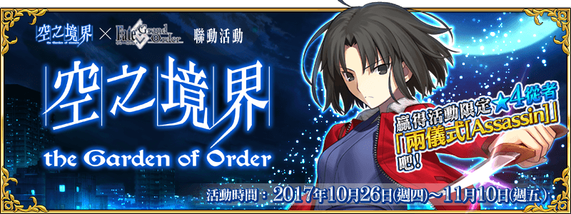
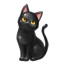

本頁面資訊僅供參考，實際情況請以遊戲內資料為準。
由於直接使用官方翻譯，可能會與其他站內翻譯相異，敬請見諒。
其他公告內容請參照日版當時公告翻譯。
- 主線關卡
-
遭遇 消耗AP 推薦Lv. 初次報酬 開放條件 20 10 暫時加入 10/26 13:00~11/10 12:59
通過：Grand Order〉 職階傾向 QP Exp 絆 
1,400 275 115 Wave 1 1  Lv.20 殺人鬼？ HP29,970
Lv.20 殺人鬼？ HP29,970掉落總合機率
(可能掉落箱數)100%(1) 一樓 一號室 消耗AP 推薦Lv. 初次報酬 開放條件 20 10 10/26 13:00~11/10 12:59
通過：遭遇〉 職階傾向 QP Exp 絆 

1,400 275 115 Wave 1 1  Lv.10 西裝屍人 HP2,230
Lv.10 西裝屍人 HP2,2302 Lv.10 西裝屍人 HP2,230Wave 2 1  Lv.25 弁慶 HP25,725
Lv.25 弁慶 HP25,725掉落總合機率
(可能掉落箱數)2100%(1) 200%(2) 一樓 二號室 消耗AP 推薦Lv. 初次報酬 開放條件 20 10 10/26 13:00~11/10 12:59
通過：遭遇
達成：No.11〉 職階傾向 QP Exp 絆 
1,400 275 115 Wave 1 1  Lv.8 公寓靈 HP967
Lv.8 公寓靈 HP9672 Lv.8 公寓靈 HP9673 Lv.8 公寓靈 HP967Wave 2 1 Lv.8 公寓靈 HP9672 Lv.8 公寓靈 HP9673 Lv.20 梅菲斯托費勒斯 HP27,180掉落總合機率
(可能掉落箱數)2100%(1) 500%(5) 二樓 四號室 消耗AP 推薦Lv. 初次報酬 開放條件 20 20 10/26 13:00~11/10 12:59
通過：一樓 四號室
通過：二樓 三號室〉 職階傾向 QP Exp 絆 
2,400 955 215 Wave 1 1 Lv.13 公寓靈 HP2,2702 Lv.13 公寓靈 HP2,270Wave 2 1  Lv.25 伊莉莎白 HP46,740
Lv.25 伊莉莎白 HP46,7402 Lv.16 公寓靈 HP4,0373 Lv.16 公寓靈 HP4,037掉落總合機率
(可能掉落箱數)2100%(1) 400%(4) 三樓 四號室 消耗AP 推薦Lv. 初次報酬 開放條件 20 30 10/26 13:00~11/10 12:59
通過：二樓 四號室
達成：No.35〉 職階傾向 QP Exp 絆 
3,400 2,190 315 Wave 1 1  Lv.15 殭屍士兵 HP3,480
Lv.15 殭屍士兵 HP3,4802 Lv.15 殭屍士兵 HP3,4803 Lv.16 殭屍士兵 HP3,672Wave 2 1 Lv.18 殭屍士兵 HP4,8662  Lv.19 殭屍士兵 HP4,896
Lv.19 殭屍士兵 HP4,8963 Lv.20 殭屍士兵 HP5,116Wave 3 1 Lv.41 布狄卡 HP61,0142 Lv.23 殭屍士兵 HP6,7703 Lv.23 殭屍士兵 HP6,770掉落總合機率
(可能掉落箱數)800%(8) 100%(1) 四樓 四號室 消耗AP 推薦Lv. 初次報酬 開放條件 20 40 10/26 13:00~11/10 12:59
通過：三樓 四號室
達成：No.39〉 職階傾向 QP Exp 絆 4,400 5,690 415 Wave 1 1 Lv.18 公寓靈 HP8,1992 Lv.18 公寓靈 HP10,2493 Lv.19 公寓靈 HP8,628Wave 2 1 Lv.21 公寓靈 HP9,5282 Lv.22 公寓靈 HP9,9573 Lv.14 公寓靈 HP11,616Wave 3 1 Lv.24 公寓靈 HP9,4642  Lv.42 阿爾托莉亞 HP98,812
Lv.42 阿爾托莉亞 HP98,8123 Lv.20 公寓靈 HP16,441掉落總合機率
(可能掉落箱數)2100%(1) 800%(8) 森林之中 消耗AP 推薦Lv. 初次報酬 開放條件 5 40 10/26 13:00~11/10 12:59
達成：No.81〉 職階傾向 QP Exp 絆 4,400 5,690 415 Wave 1 1 Lv.30 無間 HP6,666,6662 Lv.30 無間 HP6,666,6663 Lv.30 無間 HP6,666,666掉落總合機率
(可能掉落箱數)300%(3) 五樓 四號室 消耗AP 推薦Lv. 初次報酬 開放條件 20 50 10/26 13:00~11/10 12:59
通過：四樓 四號室
達成：No.18〉 職階傾向 QP Exp 絆 5,400 10,190 515 Wave 1 1 Lv.23 公寓靈 HP6,3112 Lv.22 公寓靈 HP6,0433 Lv.23 公寓靈 HP6,311Wave 2 1 Lv.25 公寓靈 HP6,8472 Lv.25 公寓靈 HP6,8473 Lv.45 梅菲斯托費勒斯 HP39,338Wave 3 1 Lv.18 大無間地獄堂 HP150,480掉落總合機率
(可能掉落箱數)22100%(1) 100%(1) 500%(5) 六樓 一號室 消耗AP 推薦Lv. 初次報酬 開放條件 20 60 10/26 13:00~11/10 12:59
通過：五樓 四號室
達成：No.54〉 職階傾向 QP Exp 絆 6,400 15,690 615 Wave 1 1 Lv.50 弗蘭 HP165,3362 Lv.50 呂布 HP140,300掉落總合機率
(可能掉落箱數)200%(2) 六樓 四號室 消耗AP 推薦Lv. 初次報酬 開放條件 20 60 10/26 13:00~11/10 12:59
通過：五樓 四號室
達成：No.49〉 職階傾向 QP Exp 絆 
6,400 15,690 615 Wave 1 1  Lv.42 海盜 HP18,576
Lv.42 海盜 HP18,5762 Lv.42 海盜 HP18,5763 Lv.42 海盜 HP18,0244  Lv.42 海盜 HP16,552
Lv.42 海盜 HP16,5525  Lv.45 海盜E HP46,221
Lv.45 海盜E HP46,221Wave 2 1 Lv.50 海盜 HP36,9742  Lv.57 網路海盜A&M HP107,664
Lv.57 網路海盜A&M HP107,6643 Lv.50 海盜 HP36,974掉落總合機率
(可能掉落箱數)600%(6) 200%(2) 七樓 一號室 消耗AP 推薦Lv. 初次報酬 開放條件 20 70 10/26 13:00~11/10 12:59
通過：六樓 四號室
達成：No.26〉 職階傾向 QP Exp 絆 7,400 22,190 715 Wave 1 1 Lv.40 斯巴達士兵 HP6,3182 Lv.40 斯巴達士兵 HP6,1303 Lv.40 斯巴達士兵 HP6,318Wave 2 1 Lv.44 斯巴達士兵 HP13,9412 Lv.44 斯巴達士兵 HP13,3953 Lv.44 斯巴達士兵 HP13,395Wave 3 1 Lv.75 炎門的守護者阿阿！ HP215,1842 Lv.50 斯巴達士兵 HP35,1263 Lv.50 斯巴達士兵 HP35,126掉落總合機率
(可能掉落箱數)800%(8) 100%(1) 七樓 四號室 消耗AP 推薦Lv. 初次報酬 開放條件 20 70 10/26 13:00~11/10 12:59
通過：六樓 四號室〉 職階傾向 QP Exp 絆 7,400 22,190 715 Wave 1 1 Lv.90 錯認．夫林 HP344,520掉落總合機率
(可能掉落箱數)100%(1) 八樓 一號室 消耗AP 推薦Lv. 初次報酬 開放條件 20 80 1000000010/26 13:00~11/10 12:59
通過：七樓 四號室〉 職階傾向 QP Exp 絆 8,400 29,690 815 Wave 1 1  Lv.70 殘念信長 HP301,455
Lv.70 殘念信長 HP301,455掉落總合機率
(可能掉落箱數)100%(1) 八樓 四號室 消耗AP 推薦Lv. 初次報酬 開放條件 20 80 1000000010/26 13:00~11/10 12:59
通過：七樓 四號室
達成：No.72〉 職階傾向 QP Exp 絆 8,400 29,690 815 Wave 1 1 Lv.80 巴貝奇 HP146,0642  Lv.65 女主角X HP125,463
Lv.65 女主角X HP125,4633 Lv.55 無名．紅 HP123,214掉落總合機率
(可能掉落箱數)100%(1) 100%(1) 100%(1) 明之境界 消耗AP 推薦Lv. 初次報酬 開放條件 20 80 10/26 13:00~11/10 12:59
達成：No.98〉 職階傾向 QP Exp 絆 8,400 29,690 815 Wave 1 1 Lv.23 不淨觀太極殿 HP404,378掉落總合機率
(可能掉落箱數)4100%(1) 屋頂 消耗AP 推薦Lv. 初次報酬 開放條件 20 90 510/26 13:00~11/10 12:59
達成：No.100〉 職階傾向 QP Exp 絆 9,400 38,190 915 Wave 1 1  Lv.65 月下美人 HP506,748
Lv.65 月下美人 HP506,748掉落總合機率
(可能掉落箱數)100%(1) - 一～四樓
-
公寓入口 消耗AP 推薦Lv. 初次報酬 開放條件 20 10 10/26 13:00~11/10 12:59
通過：遭遇∞ 職階傾向 QP Exp 絆 1,400 275 115 Wave 1 1 Lv.8 公寓靈 HP6,2852 Lv.9 公寓靈 HP6,982Wave 2 1 Lv.9 公寓靈 HP7,2502 Lv.10 公寓靈 HP9,451掉落總合機率
(可能掉落箱數)28%(4) 392%(4) 停車場 消耗AP 推薦Lv. 初次報酬 開放條件 20 60 310/26 13:00~11/10 12:59
達成：No.82∞ 職階傾向 QP Exp 絆 6,400 15,690 615 Wave 1 1 Lv.32 七人御佐姬 HP9,9272 Lv.32 七人御佐姬 HP9,9273 Lv.32 七人御佐姬 HP9,927Wave 2 1 Lv.34 七人御佐姬 HP12,4362 Lv.34 七人御佐姬 HP12,436Wave 3 1 Lv.40 七人御佐姬 HP24,6212 Lv.52 長髮公主 HP243,3413 Lv.40 七人御佐姬 HP24,621掉落總合機率
(可能掉落箱數)241022%(8) 197%(2) 485%(5) 90%(1) 2%(1) 4%(1) 一樓 一號室 退去後 消耗AP 推薦Lv. 初次報酬 開放條件 20 10 10/26 13:00~11/10 12:59
通過：一樓 一號室∞ 職階傾向 QP Exp 絆 1,400 275 115 Wave 1 1 Lv.9 西裝屍人 HP5,7202 Lv.9 西裝屍人 HP5,720Wave 2 1 Lv.10 西裝屍人 HP7,4342 Lv.11 西裝屍人 HP10,748掉落總合機率
(可能掉落箱數)28%(4) 392%(4) 一樓 三號室 消耗AP 推薦Lv. 初次報酬 開放條件 20 10 10/26 13:00~11/10 12:59
通過：遭遇
達成：No.15∞ 職階傾向 QP Exp 絆 1,400 275 115 Wave 1 1 Lv.10 樹 HP5,2662 Lv.10 樹 HP5,266Wave 2 1 Lv.12 樹 HP7,6422 Lv.15 樹 HP14,652掉落總合機率
(可能掉落箱數)28%(4) 392%(4) 二樓 一號室 消耗AP 推薦Lv. 初次報酬 開放條件 20 20 10/26 13:00~11/10 12:59
通過：一樓 四號室∞ 職階傾向 QP Exp 絆 2,400 955 215 Wave 1 1 Lv.11 公寓靈 HP3,2482 Lv.11 公寓靈 HP3,248Wave 2 1 Lv.13 人偶 HP4,5412 Lv.13 公寓靈 HP3,027Wave 3 1 Lv.40 恩怨之男 HP22,9162 Lv.15 人偶 HP6,0483 Lv.15 公寓靈 HP8,641掉落總合機率
(可能掉落箱數)2268%(4) 4%(2) 196%(2) 392%(4) 95.2%(1) 1.6%(1) 3.2%(1) 二樓 二號室 消耗AP 推薦Lv. 初次報酬 開放條件 20 20 10/26 13:00~11/10 12:59
通過：一樓 四號室
達成：No.19∞ 職階傾向 QP Exp 絆 2,400 955 215 Wave 1 1 Lv.13 人偶 HP4,541Wave 2 1 Lv.15 人偶 HP5,6162 Lv.15 人偶 HP5,616Wave 3 1 Lv.17 人偶 HP9,7132 Lv.35 渴望之男 HP25,861掉落總合機率
(可能掉落箱數)268%(4) 392%(4) 95.2%(1) 1.6%(1) 3.2%(1) 二樓 三號室 消耗AP 推薦Lv. 初次報酬 開放條件 20 20 10/26 13:00~11/10 12:59
通過：一樓 四號室
達成：No.23∞ 職階傾向 QP Exp 絆 2,400 955 215 Wave 1 1 Lv.13 樹 HP2,2812 Lv.13 樹 HP2,281Wave 2 1 Lv.15 樹 HP3,2962 Lv.15 樹 HP3,296Wave 3 1 Lv.30 被追趕的女人 HP25,7732 Lv.15 七人御佐姬 HP7,4223 Lv.15 七人御佐姬 HP7,422 Lv.17 長髮公主 HP14,176掉落總合機率
(可能掉落箱數)210264.25%(3) 8%(4) 147.75%(2) 46%(1) 392%(4) 95.2%(1) 1.6%(1) 5.2%(2) 三樓 一號室 消耗AP 推薦Lv. 初次報酬 開放條件 20 30 10/26 13:00~11/10 12:59
通過：二樓 四號室
達成：No.31∞ 職階傾向 QP Exp 絆 3,400 2,190 315 Wave 1 1 Lv.12 七人御佐姬 HP6,3962 Lv.12 七人御佐姬 HP6,396Wave 2 1 Lv.16 七人御佐姬 HP8,3462 Lv.16 七人御佐姬 HP8,346 Lv.17 長髮公主 HP16,539Wave 3 1 Lv.20 七人御佐姬 HP14,8732 Lv.28 無量之後 HP37,560掉落總合機率
(可能掉落箱數)21068.75%(6) 443.25%(5) 46%(1) 97.6%(1) 0.8%(1) 3.6%(2) 三樓 二號室 消耗AP 推薦Lv. 初次報酬 開放條件 20 30 10/26 13:00~11/10 12:59
通過：二樓 四號室
達成：No.27∞ 職階傾向 QP Exp 絆 3,400 2,190 315 Wave 1 1 Lv.12 七人御佐姬 HP4,974 Lv.13 長髮公主 HP10,9262 Lv.12 公寓靈 HP3,516Wave 2 1 Lv.15 公寓靈 HP6,9122 Lv.15 公寓靈 HP6,912Wave 3 1 Lv.30 孤立之徒 HP36,4562 Lv.20 公寓靈 HP9,0573 Lv.20 七人御佐姬 HP11,441掉落總合機率
(可能掉落箱數)2106212.25%(7) 147.75%(2) 46%(1) 97.6%(1) 392%(4) 0.8%(1) 3.6%(2) 三樓 三號室 消耗AP 推薦Lv. 初次報酬 開放條件 20 30 10/26 13:00~11/10 12:59
通過：二樓 四號室∞ 職階傾向 QP Exp 絆 3,400 2,190 315 Wave 1 1 Lv.9 人偶 HP7,5152 Lv.12 西裝屍人 HP7,767Wave 2 1 Lv.50 解放之男 HP43,0642 Lv.14 人偶 HP13,5523 Lv.25 背心屍人 HP8,554掉落總合機率
(可能掉落箱數)2364.5%(2) 5%(2) 98%(1) 292.5%(3) 97.6%(1) 0.8%(1) 1.6%(1) 四樓 一號室 消耗AP 推薦Lv. 初次報酬 開放條件 20 40 10/26 13:00~11/10 12:59
通過：三樓 四號室∞ 職階傾向 QP Exp 絆 4,400 5,690 415 Wave 1 1 Lv.18 渡邊 HP6,3402 Lv.18 渡邊 HP6,3403 Lv.20 背心屍人 HP6,184Wave 2 1 Lv.22 渡邊 HP9,0842 Lv.22 渡邊 HP9,0843 Lv.24 背心屍人 HP8,737Wave 3 1 Lv.52 忘念的狂王 HP89,5312 Lv.28 渡邊 HP11,8693 Lv.30 背心屍人 HP11,253掉落總合機率
(可能掉落箱數)6337.5%(3) 12.5%(5) 95.2%(1) 292.5%(3) 487.5%(5) 1.6%(1) 3.2%(1) 四樓 二號室 消耗AP 推薦Lv. 初次報酬 開放條件 20 40 10/26 13:00~11/10 12:59
通過：三樓 四號室
達成：No.70∞ 職階傾向 QP Exp 絆 4,400 5,690 415 Wave 1 1 Lv.20 DeadMan HP4,0412 Lv.15 七人御佐姬 HP6,1123 Lv.20 DeadMan HP4,041Wave 2 1 Lv.23 DeadMan HP4,0722 Lv.17 七人御佐姬 HP6,3793 Lv.17 七人御佐姬 HP6,379 Lv.20 長髮公主 HP16,614Wave 3 1 Lv.22 七人御佐姬 HP10,0622 Lv.22 七人御佐姬 HP10,0623  Lv.45 沒有標題的書 HP65,560
Lv.45 沒有標題的書 HP65,560掉落總合機率
(可能掉落箱數)2461049%(3) 11.75%(6) 246.25%(3) 194%(2) 95.2%(1) 46%(1) 291%(3) 1.6%(1) 5.2%(2) 四樓 三號室 消耗AP 推薦Lv. 初次報酬 開放條件 20 40 10/26 13:00~11/10 12:59
通過：三樓 四號室
通過：四樓 一號室∞ 職階傾向 QP Exp 絆 4,400 5,690 415 Wave 1 1 Lv.18 公寓靈 HP5,1242 Lv.18 公寓靈 HP5,1243 Lv.13 人偶 HP8,109Wave 2 1 Lv.15 人偶 HP9,3152 Lv.15 人偶 HP9,3153 Lv.20 公寓靈 HP6,793Wave 3 1 Lv.19 人偶 HP11,7272 Lv.19 人偶 HP11,7273 Lv.48 供品的女神 HP94,862掉落總合機率
(可能掉落箱數)6326%(3) 12.5%(5) 95.2%(1) 487.5%(5) 294%(3) 1.6%(1) 3.2%(1) - 五～八樓
-
五樓 一號室 消耗AP 推薦Lv. 初次報酬 開放條件 20 50 10/26 13:00~11/10 12:59
通過：四樓 四號室∞ 職階傾向 QP Exp 絆 5,400 10,190 515 Wave 1 1 Lv.18 公寓靈 HP4,9442 Lv.26 園田 HP4,5383 Lv.26 園田 HP4,538Wave 2 1 Lv.18 公寓靈 HP7,4162 Lv.18 公寓靈 HP11,1243 Lv.18 公寓靈 HP7,416Wave 3 1 Lv.27 公寓靈 HP18,4592 Lv.77 背德者 HP144,1023 Lv.27 公寓靈 HP18,459掉落總合機率
(可能掉落箱數)83415%(6) 6%(2) 97.6%(1) 585%(6) 194%(2) 0.8%(1) 1.6%(1) 五樓 二號室 消耗AP 推薦Lv. 初次報酬 開放條件 20 50 10/26 13:00~11/10 12:59
通過：四樓 四號室
達成：No.45∞ 職階傾向 QP Exp 絆 5,400 10,190 515 Wave 1 1 Lv.20 公寓靈 HP6,8502 Lv.20 公寓靈 HP6,8503 Lv.20 公寓靈 HP6,850Wave 2 1 Lv.24 公寓靈 HP8,2242 Lv.24 公寓靈 HP8,2243 Lv.24 公寓靈 HP8,224Wave 3 1  Lv.48 易容者 HP154,998
Lv.48 易容者 HP154,9982 Lv.27 公寓靈 HP9,2293 Lv.27 公寓靈 HP9,229掉落總合機率
(可能掉落箱數)8320%(8) 97.6%(1) 780%(8) 0.8%(1) 1.6%(1) 五樓 三號室 消耗AP 推薦Lv. 初次報酬 開放條件 20 50 10/26 13:00~11/10 12:59
通過：四樓 四號室
達成：No.22∞ 職階傾向 QP Exp 絆 5,400 10,190 515 Wave 1 1 Lv.25 七人御佐姬 HP7,1012 Lv.17 人偶 HP8,6893 Lv.17 人偶 HP8,689Wave 2 1 Lv.18 人偶 HP9,1972 Lv.28 七人御佐姬 HP9,4973 Lv.28 七人御佐姬 HP9,497 Lv.28 長髮公主 HP19,330Wave 3 1 Lv.50 Un born HP140,2672 Lv.33 七人御佐姬 HP16,7313 Lv.33 七人御佐姬 HP16,731掉落總合機率
(可能掉落箱數)24104811%(6) 9%(3) 295.5%(3) 145.5%(2) 46%(1) 291%(3) 97.6%(1) 0.8%(1) 3.6%(2) 六樓 二號室 消耗AP 推薦Lv. 初次報酬 開放條件 20 60 10/26 13:00~11/10 12:59
通過：五樓 四號室
達成：No.50∞ 職階傾向 QP Exp 絆 6,400 15,690 615 Wave 1 1 Lv.19 人偶 HP9,7052 Lv.19 人偶 HP9,7053 Lv.19 人偶 HP9,705Wave 2 1 Lv.21 人偶 HP10,7712 Lv.21 人偶 HP10,7713 Lv.21 人偶 HP10,771Wave 3 1 Lv.25 人偶 HP19,2052 Lv.25 人偶 HP19,2053 Lv.53 怪物 HP166,340掉落總合機率
(可能掉落箱數)8424%(8) 95.2%(1) 776%(8) 1.6%(1) 3.2%(1) 六樓 三號室 消耗AP 推薦Lv. 初次報酬 開放條件 20 60 10/26 13:00~11/10 12:59
通過：五樓 四號室∞ 職階傾向 QP Exp 絆 6,400 15,690 615 Wave 1 1 Lv.35 渡邊 HP7,6672 Lv.35 樹 HP7,7433 Lv.35 樹 HP7,743Wave 2 1 Lv.38 渡邊 HP10,7472 Lv.38 渡邊 HP10,7473 Lv.38 園田 HP10,427Wave 3 1 Lv.55 叛逆者 HP166,5902 Lv.43 渡邊 HP14,8593 Lv.43 園田 HP14,417掉落總合機率
(可能掉落箱數)8424%(8) 95.2%(1) 776%(8) 1.6%(1) 3.2%(1) 七樓 二號室 消耗AP 推薦Lv. 初次報酬 開放條件 20 70 10/26 13:00~11/10 12:59
通過：六樓 四號室
達成：No.14∞ 職階傾向 QP Exp 絆 7,400 22,190 715 Wave 1 1 Lv.20 人偶 HP10,2132 Lv.20 人偶 HP10,2133 Lv.20 人偶 HP10,213Wave 2 1 Lv.23 人偶 HP14,7342 Lv.23 人偶 HP14,7343 Lv.23 人偶 HP14,734Wave 3 1 Lv.27 人偶 HP31,0922  Lv.58 丟失之物 HP216,150
Lv.58 丟失之物 HP216,1503 Lv.27 人偶 HP31,092掉落總合機率
(可能掉落箱數)41024%(8) 776%(8) 97.6%(1) 0.8%(1) 1.6%(1) 七樓 三號室 消耗AP 推薦Lv. 初次報酬 開放條件 20 70 10/26 13:00~11/10 12:59
通過：六樓 四號室
達成：No.71∞ 職階傾向 QP Exp 絆 7,400 22,190 715 Wave 1 1 Lv.35 七人御佐姬 HP7,8702 Lv.35 七人御佐姬 HP7,8703 Lv.35 七人御佐姬 HP7,870Wave 2 1 Lv.35 奇美拉 HP82,821Wave 3 1 Lv.70 前來觀光！ HP191,1972 Lv.40 七人御佐姬 HP10,0723 Lv.40 七人御佐姬 HP10,072 Lv.40 長髮公主 HP27,524掉落總合機率
(可能掉落箱數)4101080.2%(1) 15.5%(6) 436.5%(5) 46%(1) 97.6%(1) 99.8%(1) 0.8%(1) 3.6%(2) 八樓 二號室 消耗AP 推薦Lv. 初次報酬 開放條件 20 80 1000000010/26 13:00~11/10 12:59
通過：七樓 四號室
達成：No.38∞ 職階傾向 QP Exp 絆 8,400 29,690 815 Wave 1 1 Lv.43 Deadman HP13,5162 Lv.43 Deadman HP13,5163 Lv.43 Deadman HP13,516Wave 2 1  Lv.31 惡魔 HP103,772
Lv.31 惡魔 HP103,772Wave 3 1 Lv.60 不識歸途 HP223,3562 Lv.52 Deadman HP18,3203 Lv.52 Deadman HP18,320掉落總合機率
(可能掉落箱數)810415%(5) 0.1%(1) 99.8%(1) 95.2%(1) 485%(5) 1.6%(1) 3.2%(1) 八樓 三號室 消耗AP 推薦Lv. 初次報酬 開放條件 20 80 1000000010/26 13:00~11/10 12:59
通過：七樓 四號室
達成：No.67∞ 職階傾向 QP Exp 絆 8,400 29,690 815 Wave 1 1 Lv.42 七人御佐姬 HP11,7602 Lv.42 七人御佐姬 HP11,7603 Lv.42 七人御佐姬 HP11,760Wave 2 1  Lv.31 惡魔 HP110,258
Lv.31 惡魔 HP110,258Wave 3 1 Lv.46 七人御佐姬 HP16,697 Lv.46 長髮公主 HP34,8202 Lv.68 怪談．困擾先生 HP231,8823 Lv.46 七人御佐姬 HP16,697掉落總合機率
(可能掉落箱數)410815.5%(6) 0.1%(1) 436.5%(5) 141.2%(2) 99.8%(1) 1.6%(1) 5.2%(2)
| 任務 | 獎勵 | 解鎖條件 |
|---|---|---|
| No.1「探索101室」 | 10/26 13:00後 | |
| No.2「探索102室」 | 達成：No.11 | |
| No.3「探索104室」 | 達成：No.2 | |
| No.4「探索204室」 | 通過：二樓 三號室 | |
| No.5「探索304室」 | 達成：No.4 | |
| No.6「探索404室」 | 達成：No.5 | |
| No.7「探索504室」 | 達成：No.6 | |
| No.8「探索604室」 | 達成：No.49 | |
| No.9「探索704室」 | 達成：No.8 | |
| No.10「探索804室」 | 500 | 達成：No.72 |
| No.11「打倒10個屍人」 | 5 開放關卡：一樓 二號室 | 達成：No.1 |
| No.12「打倒50個屍人」 | 10 | 達成：No.11 |
| No.13「打倒100個屍人」 | 15 | 達成：No.12 |
| No.14「打倒200個屍人」 | 10 開放關卡：七樓 二號室 | 達成：No.8 |
| No.15「打倒20個公寓靈」 | 5 開放關卡：一樓 三號室 | 達成：No.2 |
| No.16「打倒50個公寓靈」 | 10 | 達成：No.15 |
| No.17「打倒100個公寓靈」 | 15 | 達成：No.16 |
| No.18「打倒200個公寓靈」 | 10 開放關卡：五樓 四號室 | 達成：No.6 |
| No.19「打倒20個骷髏」 | 5 開放關卡：二樓 二號室 | 達成：No.3 |
| No.20「打倒50個骷髏」 | 10 | 達成：No.19 |
| No.21「打倒100個骷髏」 | 15 | 達成：No.20 |
| No.22「打倒200個骷髏」 | 5 開放關卡：五樓 三號室 | 達成：No.6 |
| No.23「打倒20個人偶」 | 5 開放關卡：二樓 三號室 | 通過：二樓 一號室 |
| No.24「打倒50個人偶」 | 10 | 達成：No.23 |
| No.25「打倒100個人偶」 | 15 | 達成：No.24 |
| No.26「打倒200個人偶」 | 5 開放關卡：七樓 一號室 | 達成：No.8 |
| No.27「打倒10名男性從者」 | 5 開放關卡：三樓 二號室 | 達成：No.4 |
| No.28「打倒20名男性從者」 | 5 | 達成：No.27 |
| No.29「打倒30名男性從者」 | 5 | 達成：No.28 |
| No.30「打倒40名男性從者」 | 5 | 達成：No.29 |
| No.31「打倒10名女性從者」 | 5 開放關卡：三樓 一號室 | 達成：No.4 |
| No.32「打倒20名女性從者」 | 5 | 達成：No.31 |
| No.33「打倒30名女性從者」 | 5 | 達成：No.32 |
| No.34「打倒40名女性從者」 | 5 | 達成：No.33 |
| No.35「打倒30個七人御佐姬」 | 2 開放關卡：三樓 四號室 | 達成：No.4 |
| No.36「打倒60個七人御佐姬」 | 3 | 達成：No.35 |
| No.37「打倒100個七人御佐姬」 | 4 | 達成：No.36 |
| No.38「打倒200個七人御佐姬」 | 5 開放關卡：八樓 二號室 | 達成：No.9 |
| No.39「打倒15名Assassin從者」 | 5 開放關卡：四樓 四號室 | 達成：No.5 |
| No.40「打倒25名Assassin從者」 | 5 | 達成：No.39 |
| No.41「打倒15名Rider從者」 | 5 | 達成：No.5 |
| No.42「打倒25名Rider從者」 | 5 | 達成：No.41 |
| No.43「打倒15名Berserker從者」 | 5 | 達成：No.5 |
| No.44「打倒25名Berserker從者」 | 5 | 達成：No.43 |
| No.45「打倒10名神性從者」 | 5 開放關卡：五樓 二號室 | 達成：No.6 |
| No.46「打倒15名神性從者」 | 5 | 達成：No.45 |
| No.47「打倒20名神性從者」 | 5 | 達成：No.46 |
| No.48「打倒25名神性從者」 | 5 | 達成：No.47 |
| No.49「打倒20名長髮公主」 | 開放關卡：六樓 四號室 | 達成：No.7 |
| No.50「打倒10名惡屬性從者」 | 5 開放關卡：六樓 二號室 | 達成：No.7 |
| No.51「打倒20名惡屬性從者」 | 5 | 達成：No.50 |
| No.52「打倒30名惡屬性從者」 | 5 | 達成：No.51 |
| No.53「打倒40名惡屬性從者」 | 達成：No.52 | |
| No.54「打倒10名混沌屬性從者」 | 5 開放關卡：六樓 一號室 | 達成：No.7 |
| No.55「打倒20名混沌屬性從者」 | 5 | 達成：No.54 |
| No.56「打倒30名混沌屬性從者」 | 5 | 達成：No.55 |
| No.57「打倒40名混沌屬性從者」 | 5 | 達成：No.56 |
| No.58「通關所有一樓的房間」 | 10 | 達成：No.2 |
| No.59「通關所有二樓的房間」 | 10 | 達成：No.3 |
| No.60「通關所有三樓的房間」 | 10 | 達成：No.4 |
| No.61「通關所有四樓的房間」 | 10 | 達成：No.5 |
| No.62「通關所有五樓的房間」 | 10 | 達成：No.6 |
| No.63「通關所有六樓的房間」 | 10 | 達成：No.7 |
| No.64「通關所有七樓的房間」 | 10 | 達成：No.8 |
| No.65「通關所有八樓的房間」 | 達成：No.9 | |
| No.66「通關所有樓層的一號室」 | 達成：No.9 | |
| No.67「通關所有樓層的二號室」 | 5 開放關卡：八樓 三號室 | 達成：No.9 |
| No.68「通關所有樓層的三號室」 | 5 | 達成：No.9 |
| No.69「通關所有樓層的四號室」 | 5 | 達成：No.9 |
| No.70「通關到三樓為止的所有房間」 | 開放關卡：四樓 二號室 | 達成：No.4 |
| No.71「通關到六樓為止的所有房間」 | 開放關卡：七樓 三號室 | 達成：No.7 |
| No.72「通關除804室以外的所有房間」 | 5 開放關卡：八樓 四號室 | 達成：No.9 |
| No.73「總計通關一樓的房間10次」 | 達成：No.2 | |
| No.74「總計通關二樓的房間10次」 | 達成：No.3 | |
| No.75「總計通關三樓的房間10次」 | 達成：No.4 | |
| No.76「總計通關四樓的房間10次」 | 達成：No.5 | |
| No.77「總計通關五樓的房間10次」 | 達成：No.6 | |
| No.78「總計通關六樓的房間10次」 | 達成：No.7 | |
| No.79「總計通關七樓的房間10次」 | 達成：No.8 | |
| No.80「總計通關八樓的房間10次」 | 達成：No.9 | |
| No.81「完成30個任務」 | 開放關卡：森林之中 | 達成：No.3 |
| No.82「完成60個任務」 | 開放關卡：停車場 | 達成：No.81 |
| No.83「完成90個任務」 | 達成：No.82 | |
| No.84「累計獲得100瓶礦泉水」 | 1000000 | 達成：No.2 |
| No.85「累計獲得500瓶礦泉水」 | 5000000 | 達成：No.84 |
| No.86「累計獲得100杯草莓冰淇淋」 | 1000000 | 達成：No.2 |
| No.87「累計獲得500杯草莓冰淇淋」 | 5000000 | 達成：No.86 |
| No.88「累計獲得100個黑貓模型」 | 1000000 | 達成：No.2 |
| No.89「累計獲得500個黑貓模型」 | 5000000 | 達成：No.88 |
| No.90「兩儀式（Assassin）正式加入」 | 5 | 達成：No.7 |
| No.91「兩儀式（Assassin）完成靈基再臨第1階段」 | 5 | 達成：No.90 |
| No.92「兩儀式（Assassin）完成靈基再臨第2階段」 | 5 | 達成：No.91 |
| No.93「兩儀式（Assassin）達到羈絆等級1級」 | 5 | 達成：No.90 |
| No.94「兩儀式（Assassin）達到羈絆等級2級」 | 10 | 達成：No.93 |
| No.95「兩儀式（Assassin）達到羈絆等級3級」 | 15 | 達成：No.94 |
| No.96「兩儀式（Assassin）達到羈絆等級4級」 | 5 | 達成：No.95 |
| No.97「兩儀式（Assassin）達到羈絆等級5級」 | 5 | 達成：No.96 |
| No.98「獲得隱藏鑰匙」 | 開放關卡：明之境界 | 11/1 0:00後 |
| No.99「探索屋頂」 | 500 | 達成：No.98 |
| No.100「完成所有任務」 | 開放關卡：屋頂 | 達成：No.3 |
| 黑貓模型 | |||
|---|---|---|---|
| 交換物 | 需求數 | 限制 | 共需 |
| 100 | 5 | 500 | |
| 20 | 20 | 400 | |
| 15 | 20 | 300 | |
| 10 | 20 | 200 | |
| 10 | 20 | 200 | |
| 10 | 20 | 200 | |
| 10 | 20 | 200 | |
| 10 | 20 | 200 | |
| 10 | 20 | 200 | |
| 10 | 20 | 200 | |
| 1 | 1,000 | 1,000 | |
| 1 | 0 | 0 | |
| 合計 | 3,600 | ||
| 草莓冰淇淋 | |||
|---|---|---|---|
| 交換物 | 需求數 | 限制 | 共需 |
| 100 | 5 | 500 | |
| 15 | 20 | 300 | |
| 15 | 20 | 300 | |
| 10 | 20 | 200 | |
| 10 | 20 | 200 | |
| 10 | 20 | 200 | |
| 10 | 20 | 200 | |
| 10 | 20 | 200 | |
| 10 | 20 | 200 | |
| 10 | 20 | 200 | |
|  | 10 | 0 | 0 |
| 合計 | 2,500 | ||
| 礦泉水 | |||
|---|---|---|---|
| 交換物 | 需求數 | 限制 | 共需 |
| 100 | 4 | 400 | |
| 100 | 5 | 500 | |
| 1 | 100 | 100 | |
| 2 | 100 | 200 | |
| 10 | 20 | 200 | |
| 10 | 20 | 200 | |
| 10 | 30 | 300 | |
| 10 | 20 | 200 | |
| 10 | 20 | 200 | |
| 10 | 20 | 200 | |
| 10 | 20 | 200 | |
| 10 | 20 | 200 | |
| 10 | 20 | 200 | |
| 10 | 20 | 200 | |
| 10 | 0 | 0 | |
| 合計 | 3,300 | ||